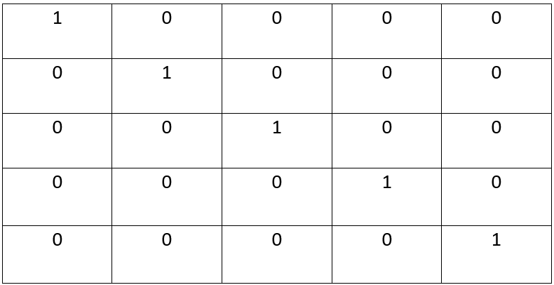

Macierze sa to prostokątne tablice liczb,
zapisywane są w nawiasach kwadratowych.
Używane są w matematyce,
są odpowiednikiem tablic w informatyce.
Praktycznie jest to to samo
Macierz jednostkowa jest to macierz która po głównej przekątnej ma jedynki, a reszta 0.
Z użyciem rysowania tabeli w wordzie narysować macierz jednostkową 5x5
napisac wzor do generowania macirzy jdnostkowej 6x6
1<= i< =6 wiersze
1<= j< =6 kolumn
i <> j a[i,j]=0
i == j a[i,j]=1